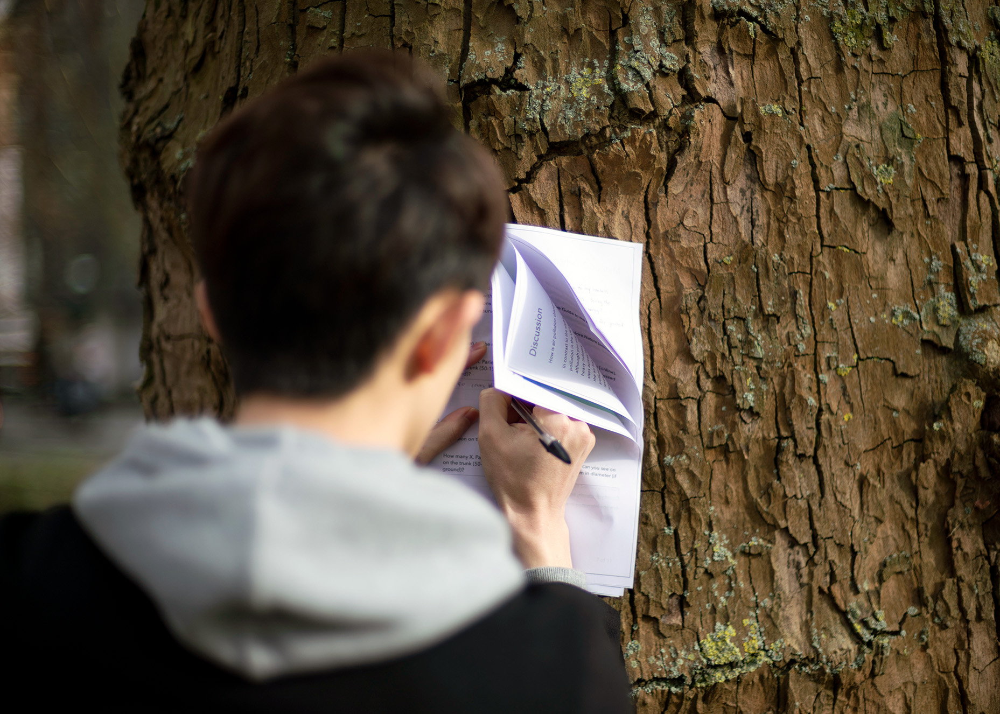
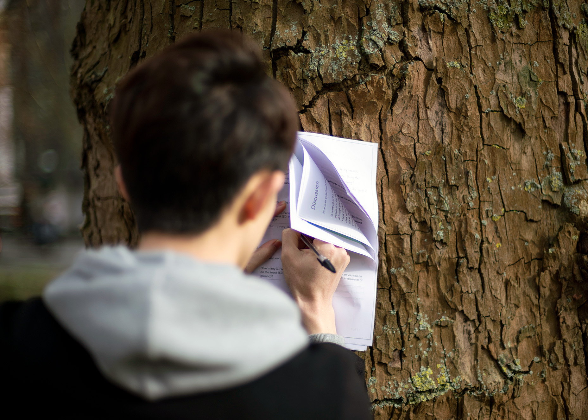

Lichen Literacy
Techniques for multispecies sensing

Lichens are proxies for air pollution. The distribution of certain lichen species can tell us about atmospheric conditions, geological change, and biodiversity. For example, the species Xanthoria parietina is a nitrophilous lichen and therefore favours roadside and rural habitats due to higher atmospheric nitrogen concentrations from road traffic emissions and agrochemical fertilisers. My creative research with lichens explores a lichenous perspective on air pollution, inspiring people to think about the issue from a non-human perspective. As research and development, I consulted the Lichen Collection at the Natural History Museum and attended fieldwork with The British Lichen Society.
In 2019, I hosted my first lichen mapping workshop as part of a programme of environmentalist events at the Royal College of Art. I also designed a mixed media installation for the Hockney Gallery entitled ‘Lichen Literacy’ that enabled visitors to interact with X. parietina across multiple scales (micro, macro, human) and via multiple sensory engagements (aural, visual, haptic). The installation featured recorded interviews with air quality analysts and lichenologists, lichen micrography, a specimen of X.parietina with a magnifying glass, and an essay detailing my archival research at the NHM.
In July 2021, I was invited to facilitate another workshop to accompany WHAT ON EARTH, an exhibition at the Koppel Project Exchange, curated by Ellen Taylor and Hannah Fletcher in partnership with the London Alternative Photography Collective. WHAT ON EARTH brought together “a selection of works exploring how the environmental and sustainability crisis […] can be both encountered and addressed through non-representational and medium-forward forms”. LICHEN ART LABS was attended by 14 participants and provided a creative introduction to urban lichens, blending studio methods and outdoor observation techniques. | Workshop photography by Moritz Dittrich. Exhibition photography by Pham Thuy Doung.
 
